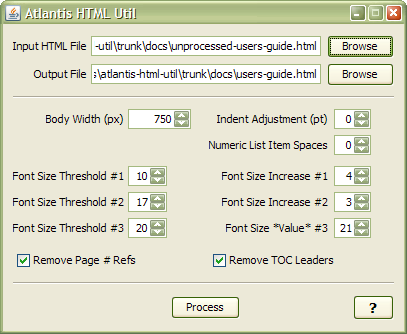

Atlantis HTML Utility
A small program to improve the appearance of HTML generated by Atlantis Word Processor
Atlantis Word Processor is a lovely little program—fast, small, stable—and can export documents as (among other formats) HTML. However, the exported HTML uses a lot of inline styles and hard-coded font sizes, which often aren't rendered optimally by web browsers.
This program post-processes Atlantis-generated HTML files to make them more visually pleasant.
Currently, this utility can perform these modifications:
• Center and change the document body width
• Scale up font-sizes, in three different tiers
• Adjust horizontal indentation
• Insert spaces between numeric list text and the item text.
• Remove inline page references
• Remove Table of Contents (TOC) leader dots
As an example of how this tool processes a file, you can compare this manual's original HTML output, before being processed by Atlantis HTML Utility.
Atlantis HTML Utility is distributed as a ZIP file, needing no installation. Just unpack it somewhere and run FormatAtlantisHTML.exe for the GUI version, or FAHc.exe for the command-line version.
• FormatAtlantisHTML-1.2.zip (27.7 MB) has all necessary components bundled with it, and should work on any version of Windows XP SP3 or higher.
• FormatAtlantisHTML-no_JRE-1.2.zip (1.4 MB) doesn't contain a Java runtime. Use this version if you're sure you have Java 7 or 8 installed, and you want a smaller download size.
